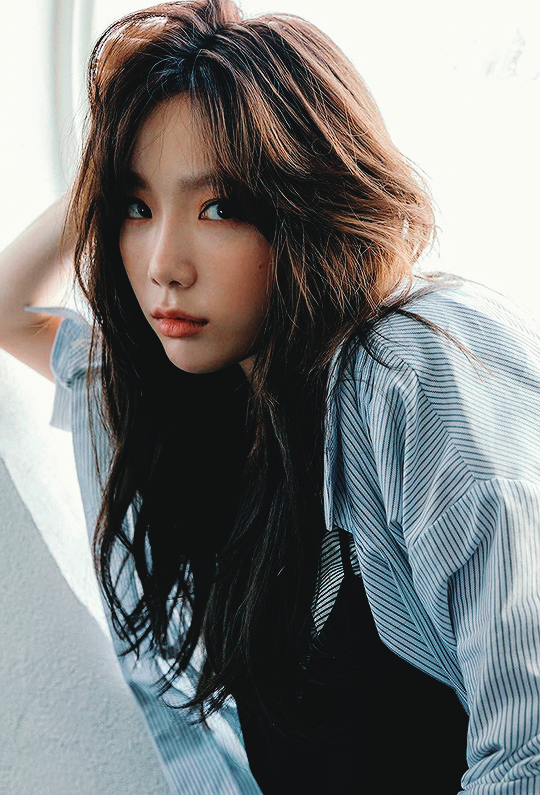

演艺经历
-

2004年，金泰妍在第八届SM青少年选拔大赛歌王中夺得第一名，进入韩国SM娱乐有限公司开始练习生生涯 。2007年8月，以演唱团体少女时代成员身份出道。2008年1月31日，为古装剧《快刀洪吉童》演唱了主题曲《如果》；4月，担任广播节目《亲密朋友》的DJ，这是其首次担任电台主持人 ；9月17日，为音乐爱情剧《贝多芬病毒》演唱了OST《听得见吗》，并凭借该歌曲获得第23届韩国金唱片大奖人气奖。
-
2010年2月2日，担任综艺类脱口秀节目《乘胜长驱》主持人。2012年4月，金泰妍与黄美英、徐珠贤组成少女时代小分队“TaeTiSeo”。2015年10月7日，公开首张迷你专辑《I》；同年12月2日，获得Mnet亚洲音乐大奖最佳女歌手奖 。2016年1月20日，凭借歌曲《I》获得第30届金唱片大赏音源本赏及人气奖；同年2月3日，公开个人专辑《Rain》；6月28日，发行第二张迷你专辑《Why》。
-
2017年2月28日，发行首张正规专辑《My Voice》；同年5月，在首尔举行单独演唱会；12月12日，发行专辑《This Christmas-Winter is Coming》。2018年6月18日，发行第三张个人迷你专辑《Something New》。
-
2019年3月24日，推出歌曲《Four Seasons》；同年10月28日，发行第二张正规专辑《Purpose》。2020年5月4日，发行单曲《Happy》。2021年7月6日，发行单曲《Weekend》。2022年2月14日，发行第三张正规专辑《INVU》。